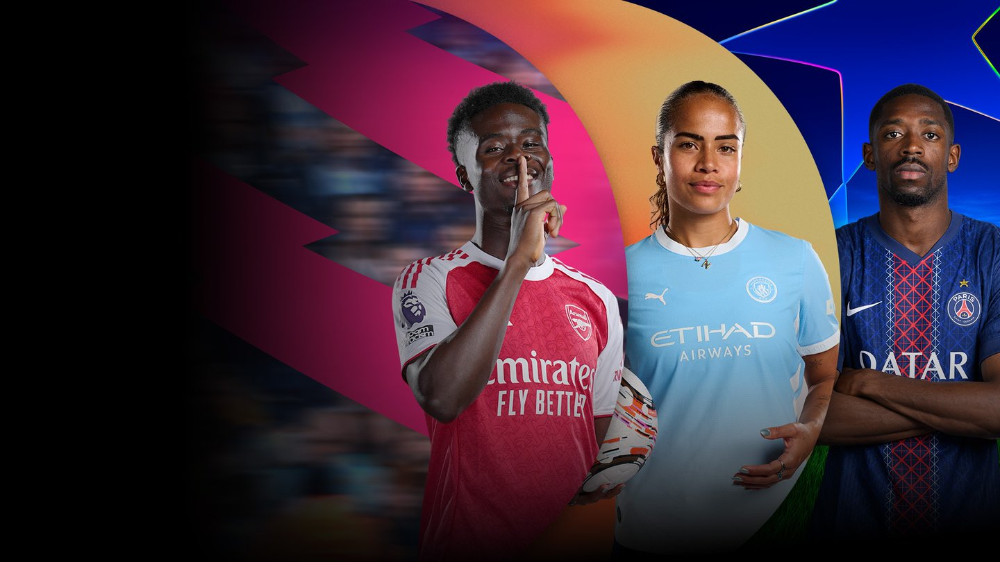

Football, widely recognized as soccer in various parts of the world, is undeniably the most popular and culturally significant sport on Earth. The beautiful game is played on a vast, rectangular grass pitch by two opposing teams of eleven players each, competing over two 45-minute halves to score the most goals. The rules are elegant in their simplicity, yet they require immense skill and teamwork to master. Players must navigate the ball across the field using only their feet, heads, and torsos, while the use of hands or arms is strictly restricted to the goalkeeper within their own penalty area. Beyond the fundamental mechanics of passing and shooting, the game is governed by strict tactical regulations, including the complex offside rule designed to prevent unfair cherry-picking near the goal, and a disciplinary system where referees issue yellow and red cards to penalise dangerous fouls. The roots of modern football trace back to 19th-century England, where standard rules were first established to unite different school games. Since then, the sport has grown into a massive global phenomenon overseen by FIFA, the sport's international governing body. Every four years, the FIFA World Cup brings nations together, capturing the attention of billions of viewers and turning elite players into global icons. The sport's appeal lies in its ultimate accessibility, as it requires nothing more than a ball and a patch of ground to play. This low barrier to entry allows children in small villages and athletes in high-tech stadiums to share the exact same passion. Ultimately, football is far more than just a physical game; it is a universal language that builds communities, inspires national pride, and creates unforgettable moments of shared human joy across every continent.
